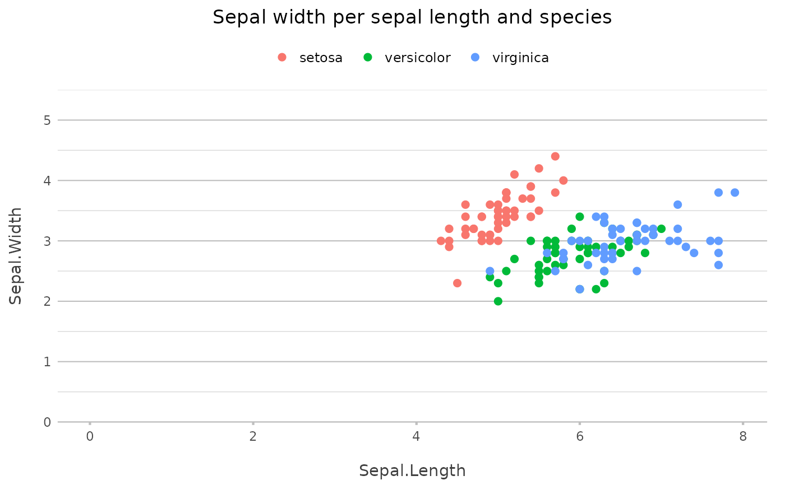
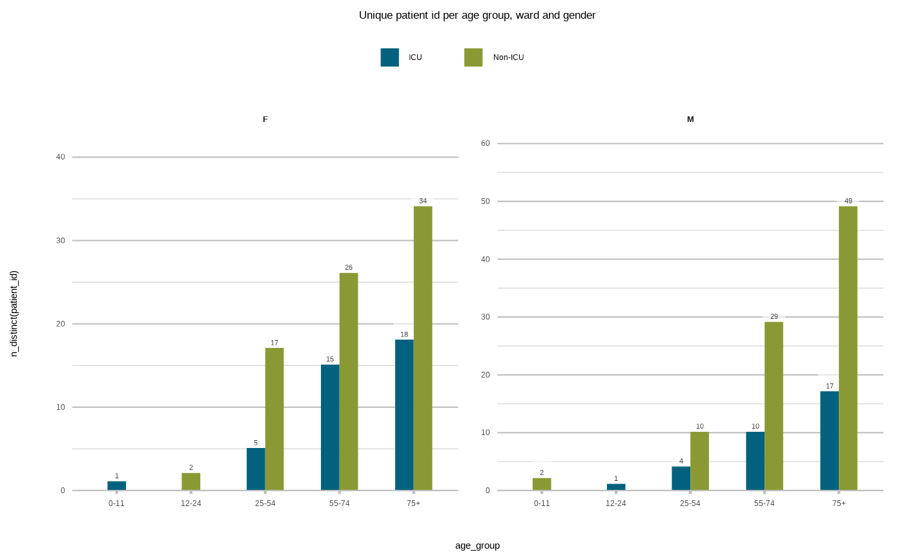

Get the title of the plot, or a default value. If the title is not set in a plot, this function tries to generate one from the plot mapping.
get_plot_title(plot, valid_filename = TRUE, default = NULL)a ggplot2 plot
a logical to indicate whether the returned value should be a valid filename, defaults to TRUE
the default value, if a plot title is absent
# plot2() uses get_plot_title() for the main title if the title is not set manually:
iris |>
plot2()
#> i Using x = Sepal.Length
#> i Using y = Sepal.Width
#> i Using category = Species
#> i Using type = "point" since both axes are numeric

admitted_patients |>
plot2(age_group, n_distinct(patient_id), ward, gender)
#> i Using type = "col" as the default

p <- plot2(mtcars, title = "Plotting **mpg** vs. **cyl**!")
#> i Using x = mpg
#> i Using y = cyl
#> i Using type = "point" since both axes are numeric
get_plot_title(p)
#> [1] "plotting_mpg_vs_cyl"
get_plot_title(p, valid_filename = FALSE)
#> [1] "Plotting mpg vs. cyl!"
p <- plot2(mtcars)
#> i Using x = mpg
#> i Using y = cyl
#> i Using type = "point" since both axes are numeric
# default is a guess:
get_plot_title(p)
#> [1] "cyl_per_mpg"
# unless 'default' is set:
get_plot_title(p, default = NA)
#> [1] "cyl_per_mpg"
get_plot_title(p, default = "title")
#> [1] "cyl_per_mpg"